Random Events
Description:
A lot of the events in VOTV are scripted story events, however some events that exist in the game are either not scripted but rather are completely random.
| Event | Description | Rarity | Image |
|---|---|---|---|
| Black Fog Event | A creepy noise can be heard from across the map, soon the world will begin to grow darker and foggier with each second passing until it eventually becomes so dark and so foggy that you can't see 20 meters in front of you. This event usually lasts 3-4 minutes and isn't very threatening. | Common |
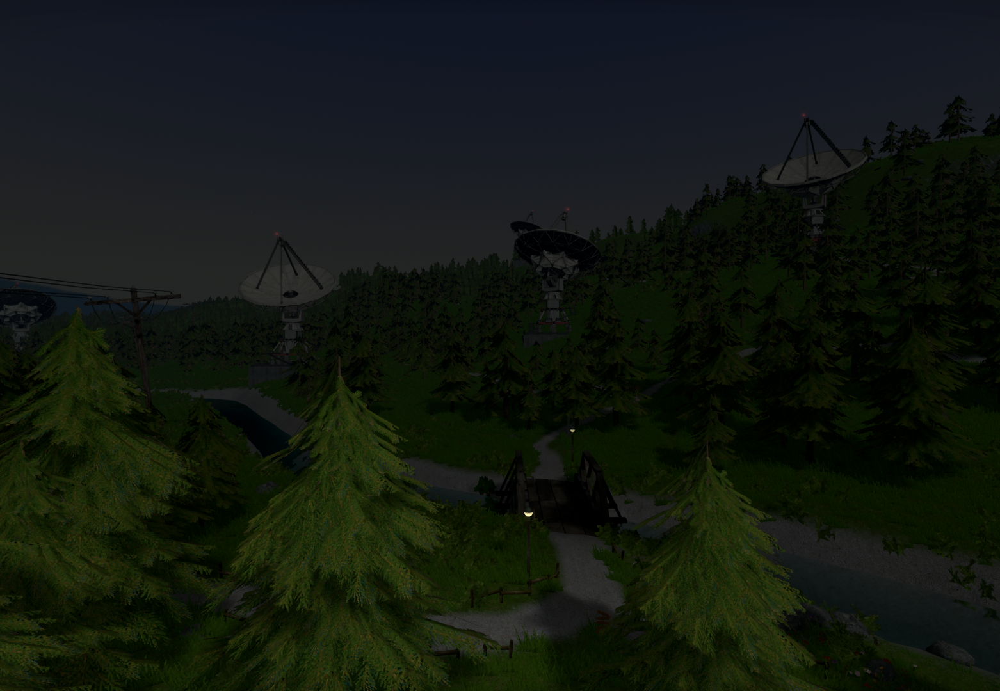 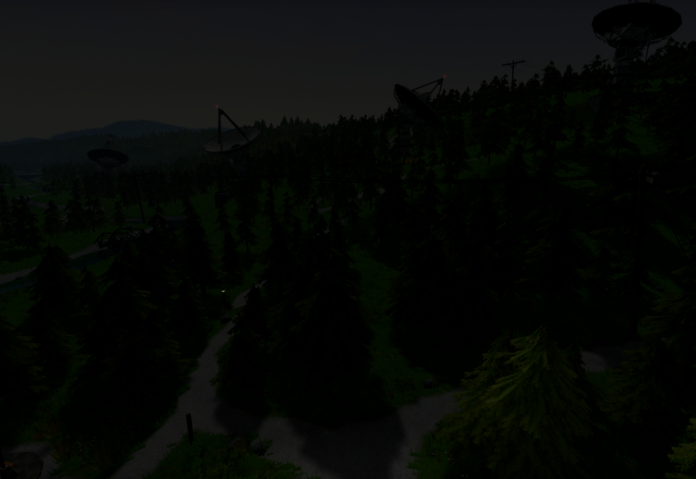 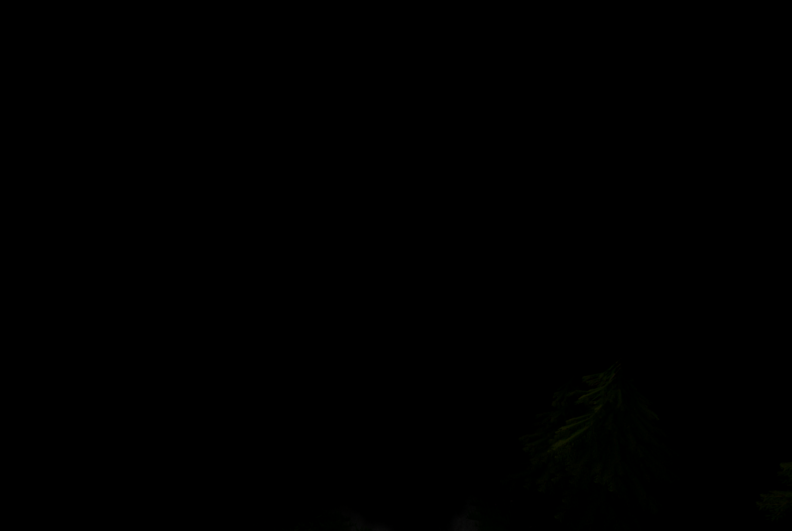 |
| Red Sky Event | At night the sky will turn completely bright red instead of the usual dark black color and it will stay like this for some time until it eventually disappears. | Uncommon |
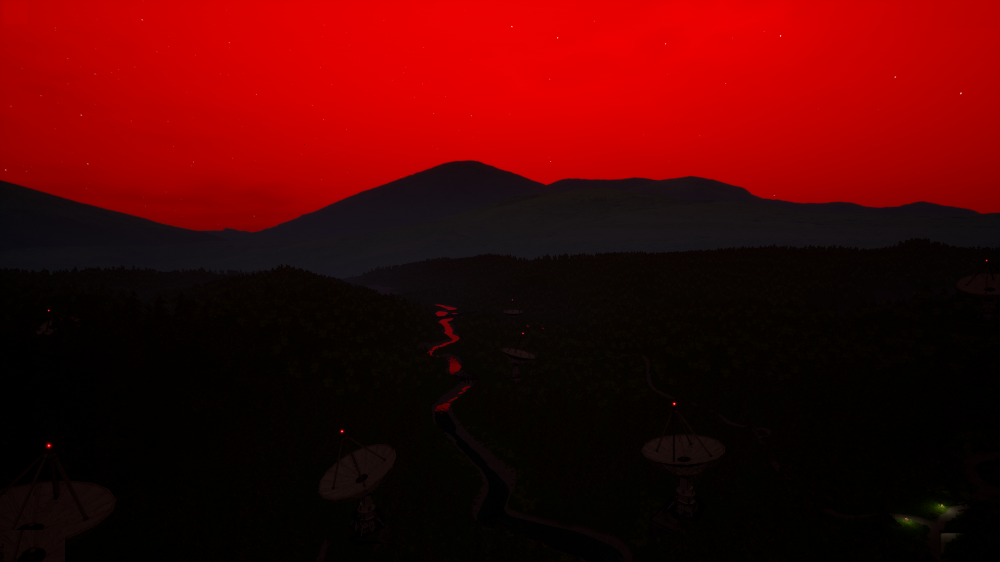 |
| Gears Event | 7-12 giant gears can be seen and heard from across the map, these gears are animated and seen spinning around, however they have no collision and are stationary. This lasts for some time before the giant gears disappear. | Very Rare |
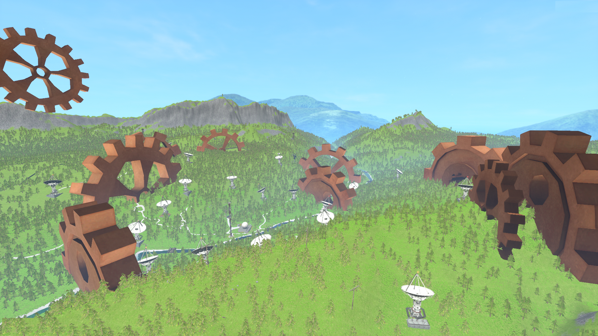 |
| Ghost Graffiti Event | A drawing or graffiti will show up on a base of a random satellite dish. | Common |
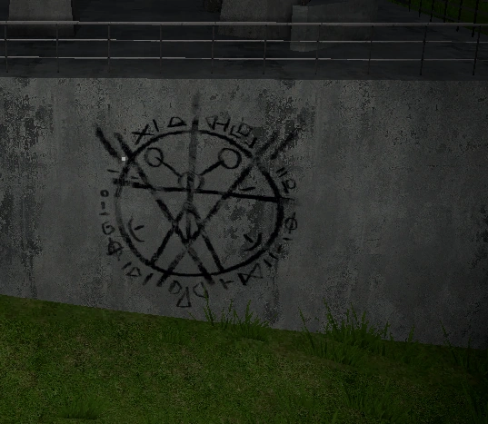 |
| Chair Skeleton Event | After walking and exploring for a while and upon returning back to base, you may encounter a a bunch of bone props that is organized and spawned in a skeleton shape and is sitting on the main chair. You can take apart the bones, however do note that the skull cannot be used for the Hell Opening Event. | Common |
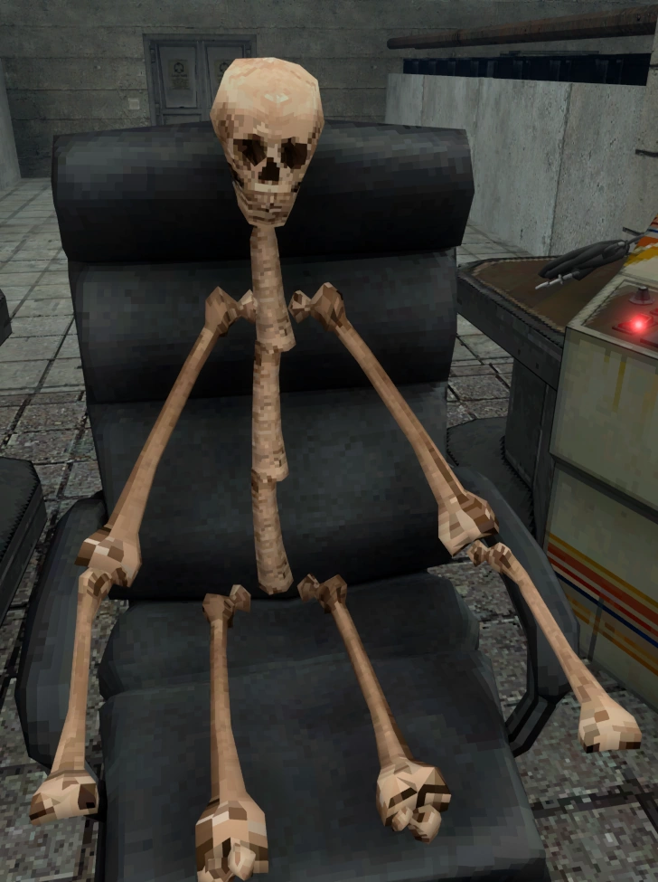 |
| Jellyfish Event | A bunch of jellyfish will spawn and begin flying in the sky, they will do this for a long time before eventually flying out of bounds. | Rare |
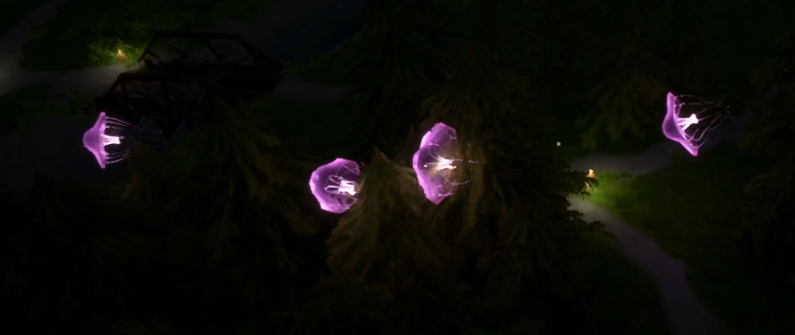 |
| Roar Event | In the older versions of VOTV, the roar event is supposed to signify the end of the game and demo completion, this was usually triggered upon day 35. But since then in the newer versions the event appears to be completely random or possibly removed. It may have a chance of appearing on day 45 in storymode but its very unlikely. | Super Rare |
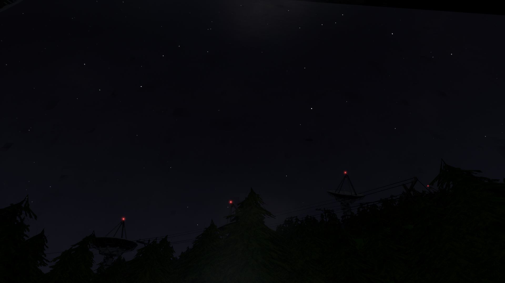 |
| Possessed Kerfus Event | Kerfus despite being off will move on its own in a random location and after some time will drop a ball of flesh on the ground. | Uncommon |
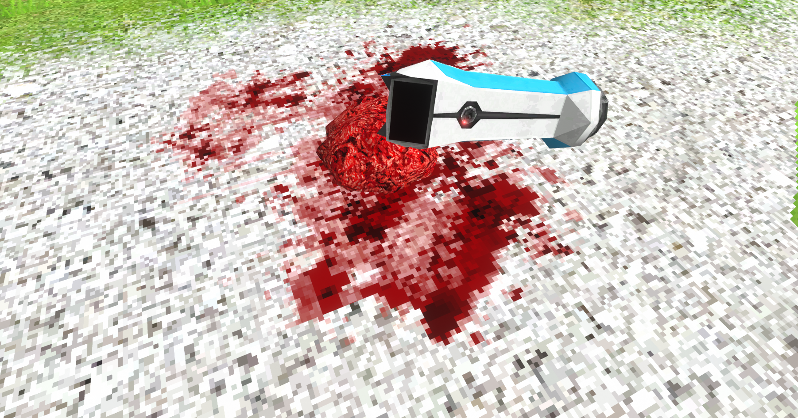 |
| Possessed TV Event | A TV prop will randomly spawn in any part of the world and will be autoplaying an error video. If you were to interact with it the TV will break off into bloody body parts and spill some blood all over. | Uncommon |
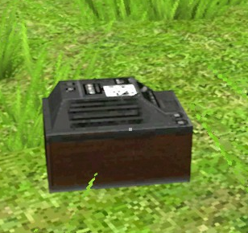 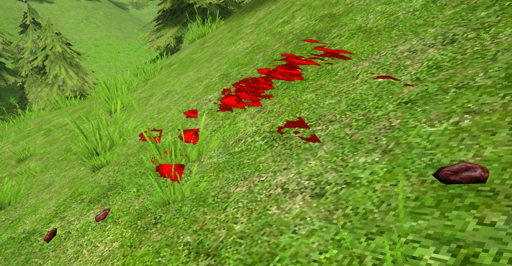 |
| Light Tube Event | A light tube prop with a bright blue light emitting will spawn high above player, randomly in any part of the forest. It will quickly fall down and shatter, you can attempt to catch the prop and keep it as extra light. | Uncommon |
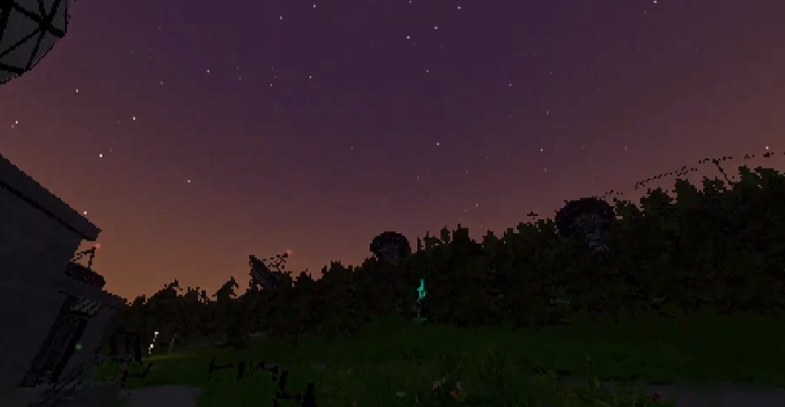 |
| Pink Wisps Event | Pink Wisp Entities will spawn all over the world. | Rare |
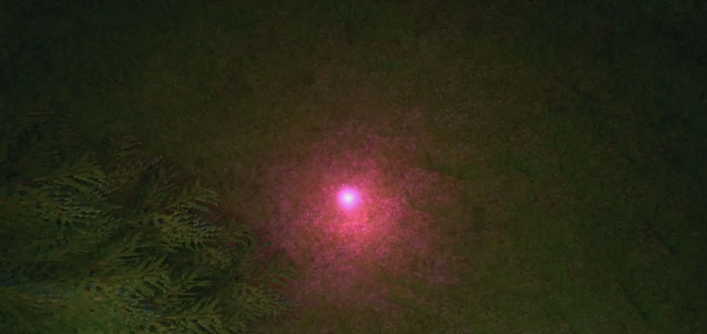 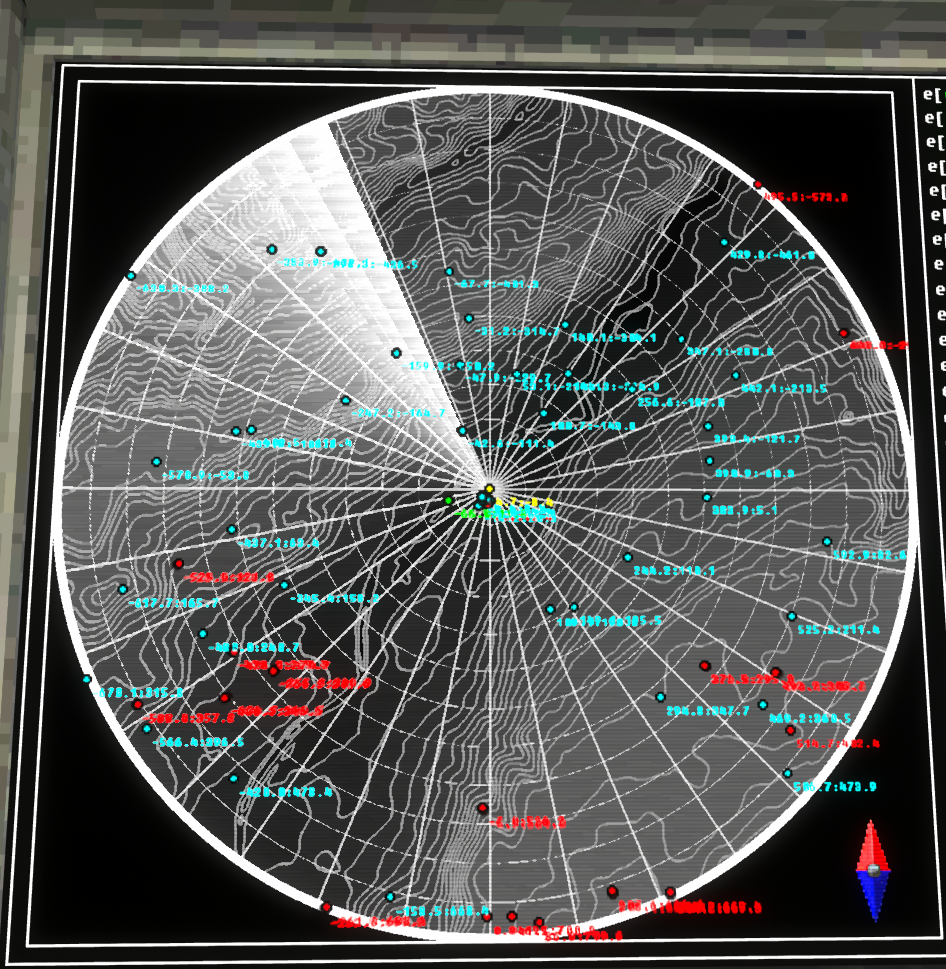 |
| Blood Skeleton Event | A bloodied skeleton with corroded bones will spawn and spill some blood on the ground. A metallic device known as the Alien Thing will spawn in the ribcage or fall out. | Extremely rare |
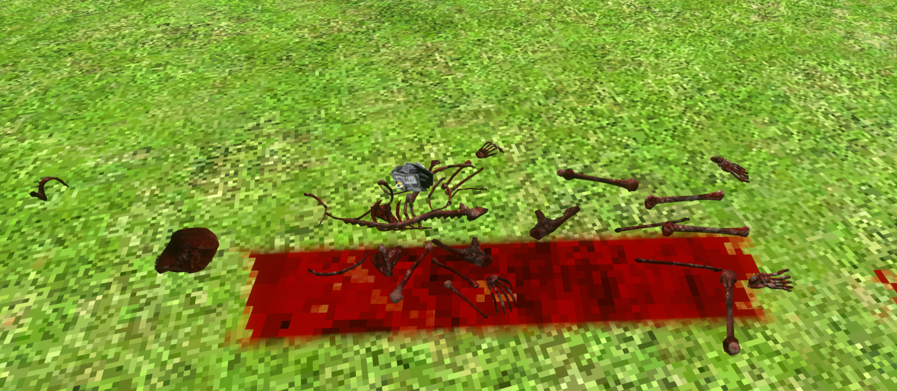 |